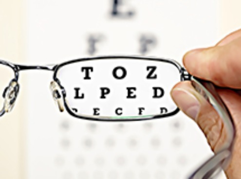

Poor vision, particularly at close distances, starts to become a challenge for most people at some stage between their 40s and 60s.
And for most this degenerates with age.
However, that isn’t true for everyone. For those who are armed for the fight and wish to do something about it, they can often improve their sight dramatically… And/or slow the progression of vision related problems.
On this page we share the top 5 ways to improve eyesight. Also, you may be interested in:
This Highly Concentrated Toxin Is Killing Your Eyes...



Top 5 Ways To Improve Eyesight
We’ve been told for years that eating Carrots improves your eyesight. But while this isn’t quite in the category of being called ‘an old wives' tale’, it’s not all that accurate.
The improvement you’d receive from carrots is due to the beta-carotene in Carrots that helps the body to produce Vitamin A.
Vitamin A helps you to see better in low light conditions because it helps the eye to convert light signals to the brain.
That being said, most people don’t consume enough carrots to really notice a difference, so carrots are not in the top 5 most helpful things you can do for improving your eyesight.
Starting from number 5 and counting our way down to number 1… Here are the top 7 things you can do to improve eyesight naturally:
5. Consume more Citrus Fruits
Vitamin C is such an important antioxidant for the eyes.
Evidence from many scientific studies over the years has shown that vitamin C reduces the risk of developing cataracts…
...PLUS when taken in combination with other essential nutrients such as Vitamin E and Vitamin B, it can slow the progression of aging of the body’s cells, including those in the eyes.
4. Wear Sunglasses When It’s Sunny
This may sound obvious, but a lot of people do not wear sunglasses often enough.
In particular, when it’s a cloudy day in summer… Sunglasses are not just to be able to see better, they are to protect your eyes from UVA and UVB radiation from sunlight.
That radiation gets through clouds, but 99% is blocked out by most sunglasses.
Wearing a hat can also protect your eyes from sun damage.
Research shows that those who wear sunglasses regularly have far less incidences of macular degeneration and cataracts.
3: Use Your Long and Short Vision Regularly
The eyes are like a muscle in that if you don’t use the abilities you have with your eyes, they atrophy.
So if you spend a lot of time each day reading, or looking at devices, or watching tv… You aren’t using your eyes abilities to change focus between different depths.
If you use your depth focus less often, it gets worse over time.
The good news is there is an easy way to strengthen this and it can improve in as little as a week.
Simply set an alarm in your phone to go off 3 times a day, and spend 2 minutes looking at far away objects and close objects.
Move in and out of long and short fields of vision. This gives your eyes the necessary exercise they need and helps improve vision and focus.
Another ‘easy’ way to do this is to play a sport, like tennis, soccer or something else, that relies on you looking far away and again up close when the play is close to you.
Going for a walk each day is another natural way to get the long and short vision your eyes need and it’s a great way to do it in a more natural setting.
2. Ensure You Get the KEY Vitamins and Minerals Your Eyes Need
You may have heard that foods like Flaxseed and Salmon, that are rich in Omega-3 fatty acids, are excellent for improving your eye health…
...But did you know that it’s even MORE important that you have adequate intake of Vitamins A, C, E and also Zinc?
The reason is that these contain essential antioxidants that help prevent macular degeneration in the eyes.
There are great food sources for these, which include strawberries, spinach, red peppers, sweet potatoes and more…
...However the best ‘all round’ source for those who need to be pedantic about having these minerals absorbed by their bodies daily is to take it in supplement form.
1. Take Care of Your Carotenoids
Carotenoids such as lutein and zeaxanthin are mainly located in the center of the retina.
These absorb up to 90% of blue light. Without these, the eyes absorb too much blue light and leads to oxidative damage. You can find these nutrients in broccoli, zucchini and eggs…
However, for those already suffering from vision loss, they are recommended to consume these regularly in supplement form.